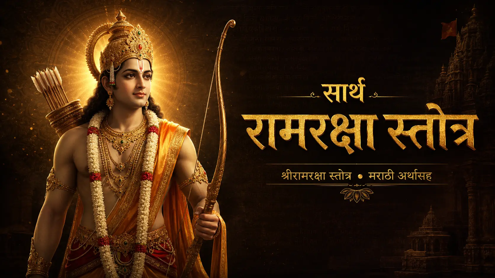
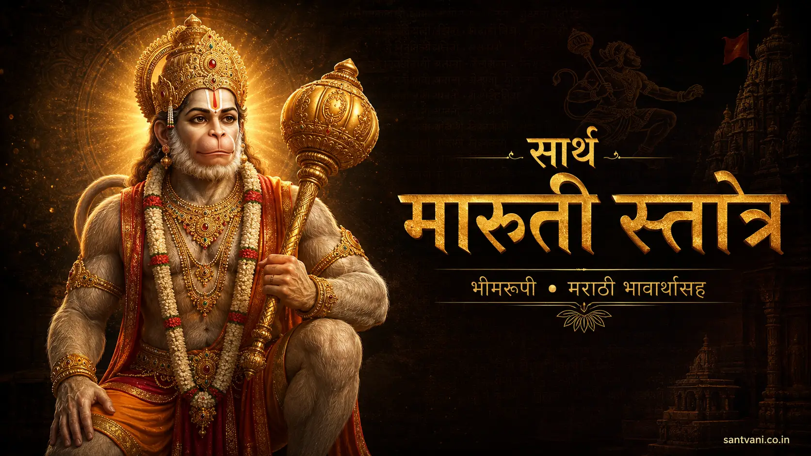
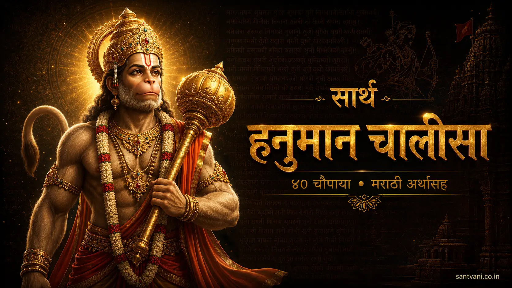
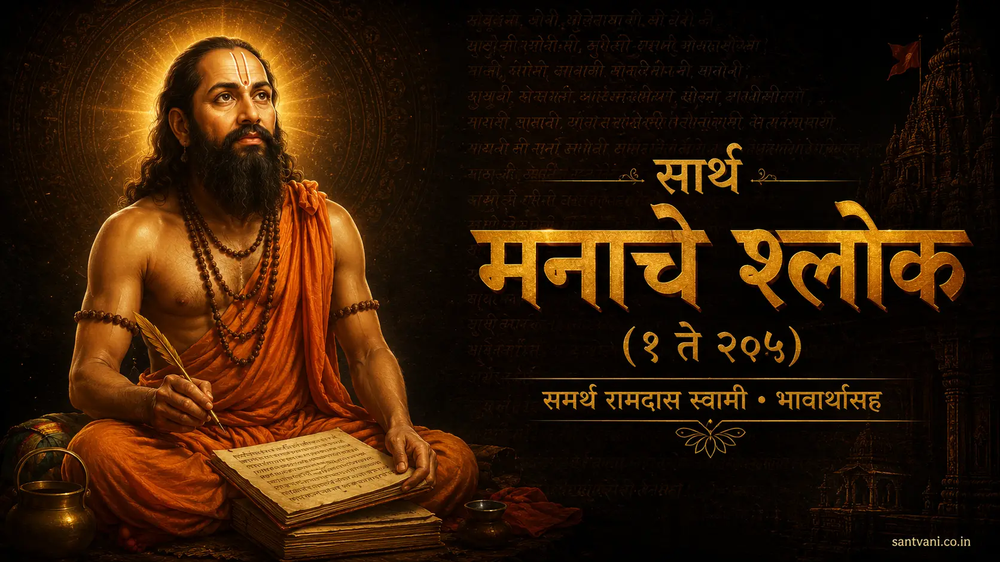
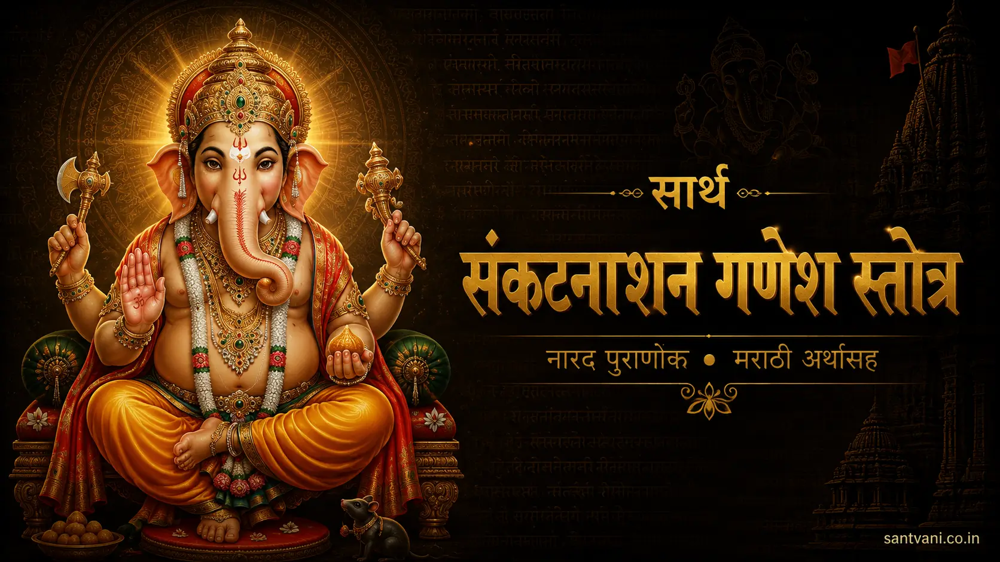
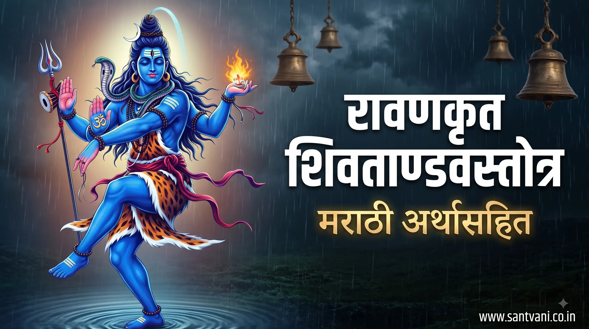
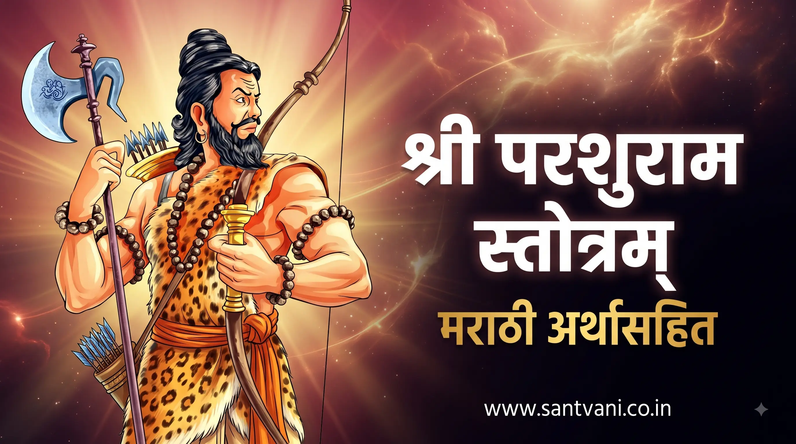
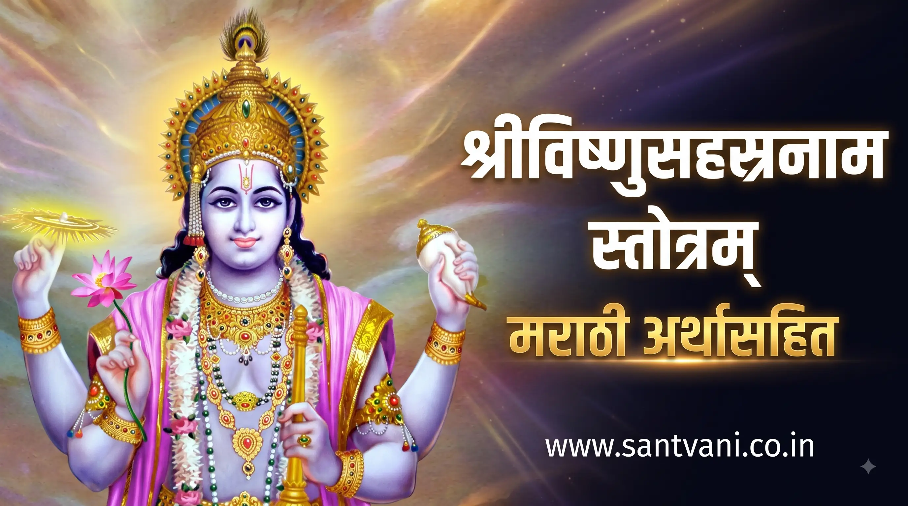

प्रमुख नित्य पठण स्तोत्रे

सार्थ रामरक्षा स्तोत्र
बुधकौशिक ऋषी रचित श्री रामरक्षा स्तोत्र संपूर्ण श्लोक व मराठी अर्थासह नित्य पठणासाठी.

सार्थ मारुती स्तोत्र (भीमरूपी)
समर्थ रामदास स्वामी रचित 'भीमरूपी महारुद्रा' मारुती स्तोत्र मराठी भावार्थासह.
सार्थ श्री गणपती अथर्वशीर्ष
गणपती बाप्पाच्या नित्य उपासनेसाठी अथर्वशीर्ष उपनिषद मूळ संस्कृत व मराठी अर्थासह.

सार्थ हनुमान चालीसा
संत तुलसीदास रचित हनुमान चालीसा ४० चौपाया सोप्या मराठी अर्थासह.

मनाचे श्लोक (१ ते २०५)
समर्थ रामदास स्वामी रचित संपूर्ण २०५ श्री मनाचे श्लोक व भावार्थ.

सार्थ संकटनाशन गणेश स्तोत्र
नारद पुराणोक्त संकट हरण करणारे श्री गणेश स्तोत्र मराठी अर्थासह.
सार्थ श्री व्यंकटेश स्तोत्र
देवीदास रचित अत्यंत फलदायी श्री व्यंकटेश स्तोत्र भावार्थासह.
सार्थ ऋग्वैदिक श्रीसूक्त
लक्ष्मी प्राप्ती व समृद्धीसाठी ऋग्वेदातील प्रसिद्ध श्रीसूक्त मराठी अर्थासह.
सार्थ श्री शिव महिम्न स्तोत्रम्
पुष्पदंत विरचित अत्यंत सुंदर आणि फलदायी शिव महिम्न स्तोत्र मराठी अर्थासह.
सार्थ श्री शिव पंचाक्षर स्तोत्रम्
'ॐ नमः शिवाय' या पंचाक्षरी मंतावर आधारित श्री आदि शंकराचार्य रचित स्तोत्र मराठी अर्थासह.

सार्थ श्री शिव तांडव स्तोत्रम्
रावण रचित अद्भूत, ओजस्वी आणि शक्तिदायी श्री शिव तांडव स्तोत्र मराठी अर्थासह.

सार्थ श्री परशुराम स्तोत्रम्
भगवान श्रीविष्णूंचे सहावे अवतार भगवान श्री परशुराम स्तोत्र मराठी अर्थासह.

सार्थ श्री विष्णु सहस्रनाम स्तोत्रम्
भगवान श्रीविष्णूंच्या १,००० कल्याणकारी नामांचे महाभारतकालीन प्रसिद्ध स्तोत्र सविस्तर मराठी अर्थासह.